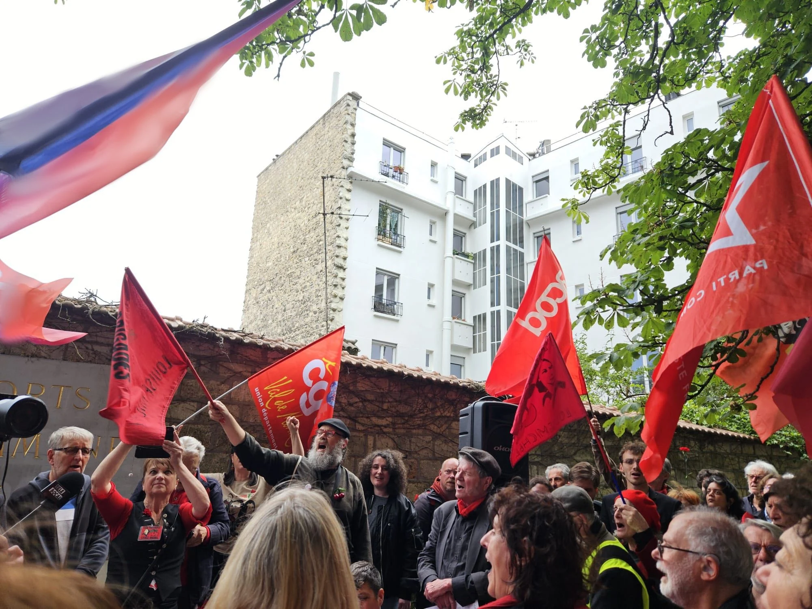
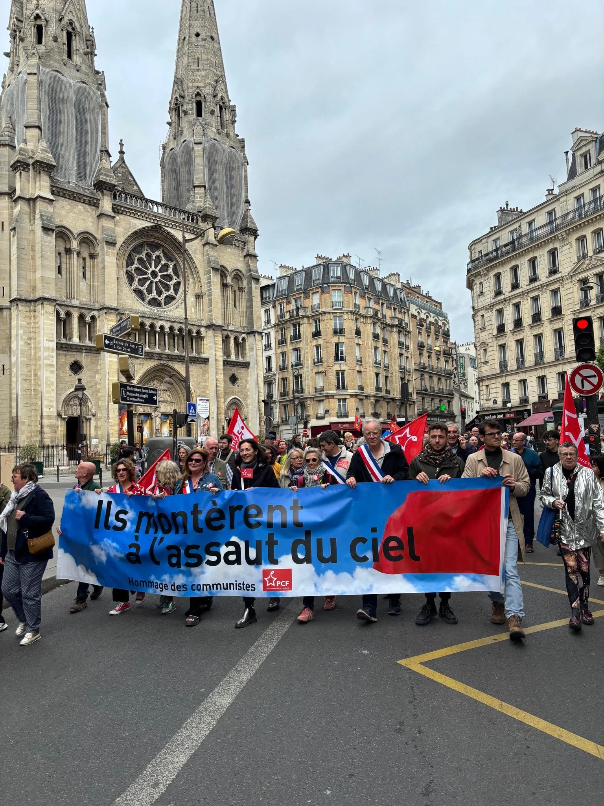

Compte rendu en images
Mémoire de la Commune. La montée au mur des Fédérés en images
Date indiquée par Facebook · 24 mai 2025
Repères éditoriaux
Nous avons publié quatre photographies de la montée au mur des Fédérés, une initiative des Amies et Amis de la Commune de Paris 1871. Le dossier associe aussi un texte historique du PCF.
Texte conservé avec la publication
Montée au mur des fédérés au cimetière du Père Lachaise.
Une initiative de l'association des Amies et Amis de la Commune de Paris 1871.
La Commune n'est pas morte ! 🚩


Sources
Archive rouge · export Facebook · AR-0002-FB-01114
À lire aussi · Mur des Fédérés – Ils montèrent à l’assaut du ciel !